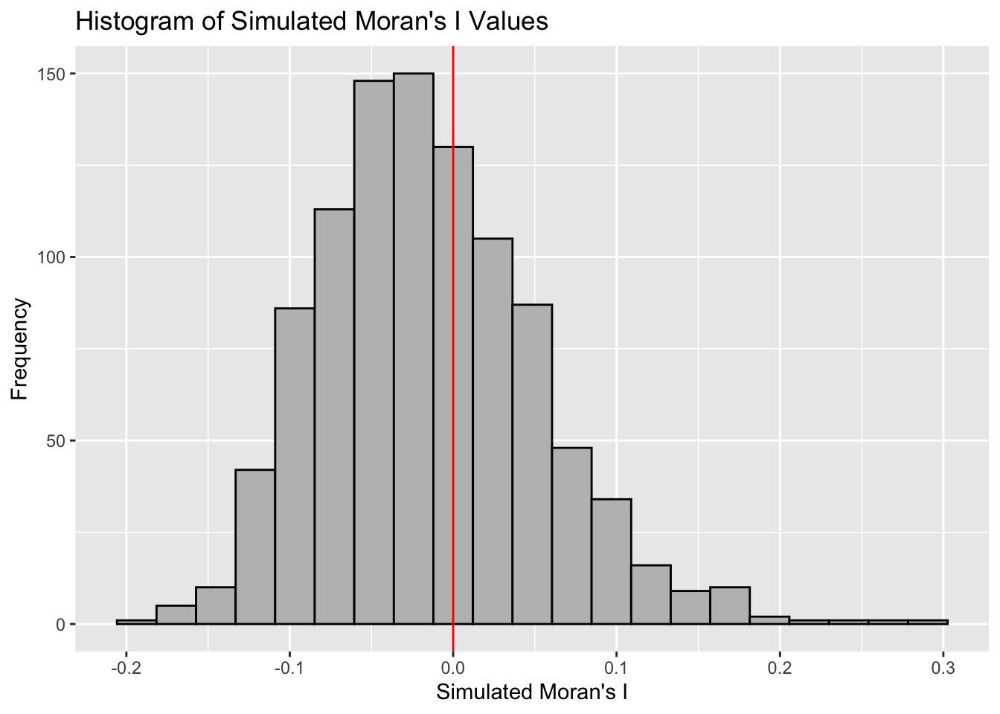
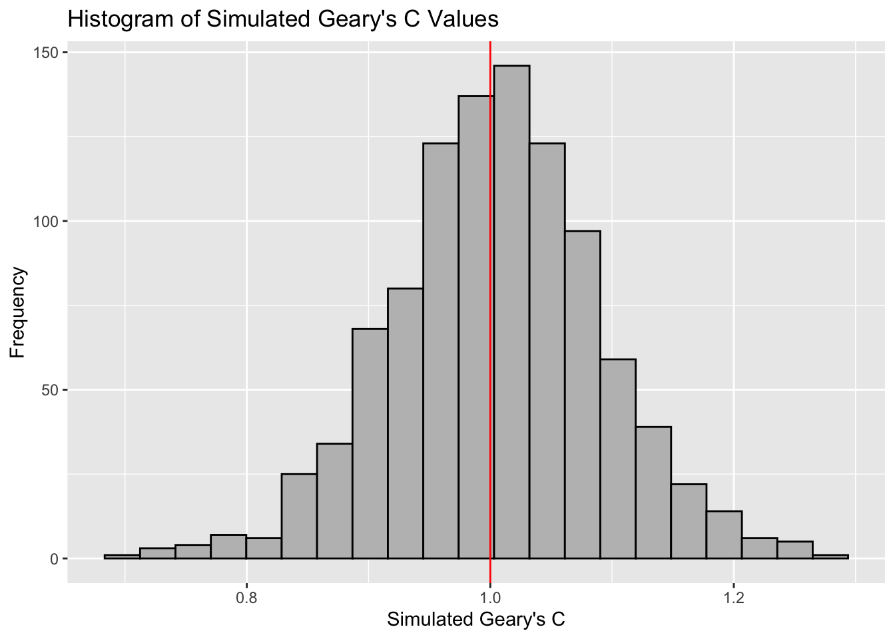

pacman::p_load(sf, spdep, tmap, tidyverse)5A: Global Measures of Spatial Autocorrelation
In this exercise, we will learn to compute Global Measures of Spatial Autocorrelation using the spdep package, including Moran’s I and Geary’s C tests, spatial correlograms, and their statistical interpretation.
1 Exercise 5A Reference
R for Geospatial Data Science and Analytics - 9 Global Measures of Spatial Autocorrelation
2 Overview
In this exercise, we will learn to compute Global Measures of Spatial Autocorrelation using the spdep package, including Moran’s I and Geary’s C tests, spatial correlograms, and their statistical interpretation.
3 Learning Outcome
- Import geospatial data using the sf package
- Import CSV data using the readr package
- Perform relational joins using the dplyr package
-
Compute Global Spatial Autocorrelation (GSA) statistics using the
spdep package
- Moran’s I test and Monte Carlo simulation
- Geary’s C test and Monte Carlo simulation
- Plot Moran scatterplot and spatial correlograms
- Interpret GSA statistics correctly
4 The Analytical Question
In spatial policy planning, one of the main development objective of the local government and planners is to ensure equal distribution of development in the province. In this study, we will apply spatial statistical methods to examine the distribution of development in Hunan Province, China, using a selected indicator (e.g., GDP per capita).
Our key questions are:
- Is development evenly distributed geographically?
- If not, is there evidence of spatial clustering?
- If clustering exists, where are these clusters located?
5 The Data
The following 2 datasets will be used in this exercise.
| Data Set | Description | Format |
|---|---|---|
| Hunan county boundary layer | Geospatial data set representing the county boundaries of Hunan | ESRI Shapefile |
| Hunan_2012.csv | Contains selected local development indicators for Hunan in 2012 | CSV |
6 Installing and Launching the R Packages
The following R packages will be used in this exercise:
| Package | Purpose | Use Case in Exercise |
|---|---|---|
| sf | Imports, manages, and processes vector-based geospatial data. | Handling vector geospatial data such as the Hunan county boundary layer in shapefile format. |
| spdep | Provides functions for spatial dependence analysis, including spatial weights and spatial autocorrelation. | Computing spatial weights and creating spatially lagged variables. |
| tmap | Creates static and interactive thematic maps using cartographic quality elements. | Visualizing regional development indicators and plotting maps showing spatial relationships and patterns. |
| tidyverse | A collection of packages for data science tasks such as data manipulation, visualization, and modeling. | Importing CSV files, wrangling data, and performing relational joins. |
To install and load these packages, use the following code:
7 Import Data and Preparation
In this section, we will perform 3 necessary steps to prepare the data for analysis.
Note
The data preparation is the same as previous exercise such as Exercise 4A.
7.1 Import Geospatial Shapefile
Firstly, we will use
st_read()
of sf package to import Hunan shapefile into R.
The imported shapefile will be
simple features Object of sf.
hunan <- st_read(dsn = "data/geospatial",
layer = "Hunan")Reading layer `Hunan' from data source
`/Users/walter/code/isss626/isss626-gaa/Hands-on_Ex/Hands-on_Ex05/data/geospatial'
using driver `ESRI Shapefile'
Simple feature collection with 88 features and 7 fields
Geometry type: POLYGON
Dimension: XY
Bounding box: xmin: 108.7831 ymin: 24.6342 xmax: 114.2544 ymax: 30.12812
Geodetic CRS: WGS 847.2 Import Aspatial csv File
Next, we will import Hunan_2012.csv into R by using
read_csv() of readr package. The
output is R dataframe class.
hunan2012 <- read_csv("data/aspatial/Hunan_2012.csv")7.3 Perform Relational Join
Then, we will perform a left_join() to update the
attribute table of hunan’s SpatialPolygonsDataFrame with the
attribute fields of hunan2012 dataframe.
hunan <- left_join(hunan,hunan2012) %>%
select(1:4, 7, 15)7.4 Visualizing Regional Development Indicator
To visualize the regional development indicator, we can prepare a
base map and a choropleth map to show the distribution of GDPPC
2012 (GDP per capita) by using qtm() of
tmap package.
equal <- tm_shape(hunan) +
tm_fill("GDPPC",
n = 5,
style = "equal") +
tm_borders(col = "grey") +
tm_layout(main.title = "Equal Interval Classification")
quantile <- tm_shape(hunan) +
tm_fill("GDPPC",
n = 5,
style = "quantile") +
tm_borders(col = "grey") +
tm_layout(main.title = "Equal Quantile Classification")
tmap_arrange(equal,
quantile,
asp=1,
ncol=2)

Note
Observations
On the left plot, we perform equal interval classification which divides the range of GDPPC into five equal-sized intervals. This method ensures that the difference between the maximum and minimum value within each class is the same.
The equal interval classification method is best used for continuous datasets such as precipitation or temperature.
The advantage of the equal interval classification method is that it creates a legend that is easy to interpret and present to a nontechnical audience. The primary disadvantage is that certain datasets will end up with most of the data values falling into only one or two classes, while few to no values will occupy the other classes.
On the right plot, we perform equal quantile classification which divides the regions into five classes such that each class contains approximately the same number of regions. This method adjusts the intervals to ensure an equal number of regions per class, which might result in unequal interval sizes.
The equal quantile classification is best for data that is evenly distributed across its range.
As there are 88 counties in Hunan, each class in the quantile classification methodology will contain 88 / 5 = 17.6 different counties. The advantage to this method is that it often excels at emphasizing the relative position of the data values (i.e., which counties contain the top 20 percent of the Hunan population). The primary disadvantage of the quantile classification methodology is that features placed within the same class can have wildly differing values, particularly if the data are not evenly distributed across its range. In addition, the opposite can also happen whereby values with small range differences can be placed into different classes, suggesting a wider difference in the dataset than actually exists.
For more info, see Data Classification
8 Global Measures of Spatial Autocorrelation
In this section, we will compute global spatial autocorrelation statistics and to perform spatial complete randomness test for global spatial autocorrelation.
8.1 Computing Contiguity Spatial Weights
Before we can compute the global spatial autocorrelation statistics, we need to construct a spatial weights of the study area. The spatial weights is used to define the neighbourhood relationships between the geographical units (i.e. county) in the study area.
In the code block below, the poly2nb() function from
the spdep package calculates contiguity weight
matrices for the study area by identifying regions that share
boundaries.
By default, poly2nb() uses the “Queen” criteria,
which considers any shared boundary or corner as a neighbor
(equivalent to setting queen = TRUE). If we want to
restrict the criteria to shared boundaries only (excluding
corners), set queen = FALSE.
wm_q <- poly2nb(hunan,
queen=TRUE)
summary(wm_q)Neighbour list object:
Number of regions: 88
Number of nonzero links: 448
Percentage nonzero weights: 5.785124
Average number of links: 5.090909
Link number distribution:
1 2 3 4 5 6 7 8 9 11
2 2 12 16 24 14 11 4 2 1
2 least connected regions:
30 65 with 1 link
1 most connected region:
85 with 11 linksThe summary report above shows that there are 88 area units in Hunan. The most connected area unit has 11 neighbours. There are two area units with only one neighbours.
8.2 Row-standardised Weights Matrix
Next, we need to assign weights to each neighboring polygon. In this case, we’ll use equal weights (style=“W”), where each neighboring polygon gets a weight of 1/(number of neighbors). This means we take the value for each neighbor and divide it by the total number of neighbors, then sum these weighted values to calculate a summary measure, such as weighted income.
While this equal weighting approach is straightforward and easy to understand, it has a limitation: polygons on the edges of the study area have fewer neighbors, which can lead to over- or underestimation of the actual spatial relationships (spatial autocorrelation) in the data.
Tip
For simplicity, we use the style=“W” option in this example, but keep in mind that other, potentially more accurate methods are available, such as style=“B”.
rswm_q <- nb2listw(wm_q, style="W", zero.policy = TRUE)
rswm_qCharacteristics of weights list object:
Neighbour list object:
Number of regions: 88
Number of nonzero links: 448
Percentage nonzero weights: 5.785124
Average number of links: 5.090909
Weights style: W
Weights constants summary:
n nn S0 S1 S2
W 88 7744 88 37.86334 365.9147Tip
-
The input of
nb2listw()must be an object of class nb. The syntax of the function has two major arguments, namely style and zero.poly. -
style can take values “W”, “B”, “C”, “U”, “minmax” and “S”. B is the basic binary coding, W is row standardised (sums over all links to n), C is globally standardised (sums over all links to n), U is equal to C divided by the number of neighbours (sums over all links to unity), while S is the variance-stabilizing coding scheme proposed by Tiefelsdorf et al. 1999, p. 167-168 (sums over all links to n).
-
The zero.policy=TRUE option allows for lists of non-neighbors. This should be used with caution since the user may not be aware of missing neighbors in their dataset however, a zero.policy of FALSE would return an error.
9 Global Measures of Spatial Autocorrelation: Moran’s I
In this section, you will learn how to perform Moran’s I statistics
testing by using
moran.test()
of spdep.
Note
Spatial Autocorrelation, specifically Global Moran’s I, is a statistical measure used to evaluate the degree to which similar values in a dataset are clustered together or dispersed across a geographic space.
In simpler terms, it measures whether similar values occur near each other (positive autocorrelation) or if dissimilar values are found near each other (negative autocorrelation).
Global Moran’s I takes into account both the locations of features and the values associated with those features. It computes an index value (Moran’s I), a z-score, and a p-value to determine the statistical significance of the observed spatial pattern
Intepreting Moran’s I index
The Moran’s I index ranges from -1 to +1. A value close to +1 indicates clustering of similar values, a value close to -1 indicates dispersion of similar values, and a value near 0 suggests a random spatial pattern2.
- Positive Moran’s I: Indicates that high values are near other high values, and low values are near other low values.
- Negative Moran’s I: Indicates that high values are near low values and vice versa.
- Zero Moran’s I: Suggests no spatial autocorrelation, implying a random distribution.
For more info, see How Spatial Autocorrelation (Global Moran’s I) works—ArcGIS Pro | Documentation
9.1 Moran’s I test
To assess whether there is significant spatial autocorrelation in
the GDP per capita (GDPPC) across regions, we use
Moran’s I test. The test is performed using the
moran.test()
function from the spdep package.
- Null Hypothesis (\(H_0\)): There is no spatial autocorrelation in GDP per capita across the regions (Moran’s I = 0).
- Alternative Hypothesis (\(H_1\)): There is positive spatial autocorrelation in GDP per capita (Moran’s I > 0).
We will use an alpha value (α) of 0.05 (95% confidence level) to determine the statistical significance.
moran.test(hunan$GDPPC,
listw=rswm_q,
zero.policy = TRUE,
na.action=na.omit)
Moran I test under randomisation
data: hunan$GDPPC
weights: rswm_q
Moran I statistic standard deviate = 4.7351, p-value = 1.095e-06
alternative hypothesis: greater
sample estimates:
Moran I statistic Expectation Variance
0.300749970 -0.011494253 0.004348351 Note
Question: What statistical conclusion can you draw from the output above?
-
The value of Moran’s I is 0.3007, a positive number, indicating positive spatial autocorrelation. This means that regions with similar GDP per capita (GDPPC) values tend to be geographically close to each other.
-
The p-value is 1.095e-06, which is much smaller than our alpha value of 0.05. This provides strong evidence against the null hypothesis of no spatial autocorrelation.
Therefore, We will reject the null hypothesis at 95% confidence interval because the p-value is smaller than our chosen alpha value.
9.2 Computing Monte Carlo Moran’s I
In this example, we explore the spatial distribution of Hunan GDPPC by county for the state of Hunan using the Monte Carlo approach. A total of 1000 simulation will be performed. We will perform the same hypothesis testing described above.
set.seed(1234)
bperm= moran.mc(hunan$GDPPC,
listw=rswm_q,
nsim=999,
zero.policy = TRUE,
na.action=na.omit)
bperm
Monte-Carlo simulation of Moran I
data: hunan$GDPPC
weights: rswm_q
number of simulations + 1: 1000
statistic = 0.30075, observed rank = 1000, p-value = 0.001
alternative hypothesis: greaterNote
Question: What statistical conclusion can you draw from the output above?
-
The value of Moran’s I is 0.30075, which is a positive number, indicating positive spatial autocorrelation. This suggests that regions with similar GDP per capita (GDPPC) values are geographically close to each other.
-
The p-value obtained from the Monte Carlo simulation is 0.001, which is much smaller than our alpha value of 0.05. This provides strong evidence against the null hypothesis of no spatial autocorrelation.
Therefore, we will reject the null hypothesis at 95% confidence interval because the p-value is smaller than our chosen alpha value.
9.3 Visualising Monte Carlo Moran’s I
It is always a good practice for us the examine the simulated Moran’s I test statistics in greater detail. This can be achieved by plotting the distribution of the statistical values as a histogram by using the code block below.
We will first observe the summary report of the Monte Carlo
Moran’s I output before visualizing the plots using
ggplot2 and base R.
# Calculate the mean of the first 999 simulated Moran's I values
mean(bperm$res[1:999])[1] -0.01504572# Calculate the variance of the first 999 simulated Moran's I values
var(bperm$res[1:999])[1] 0.004371574summary(bperm$res[1:999]) Min. 1st Qu. Median Mean 3rd Qu. Max.
-0.18339 -0.06168 -0.02125 -0.01505 0.02611 0.27593 ggplot(data.frame(x = bperm$res), aes(x = x)) +
geom_histogram(binwidth = diff(range(bperm$res)) / 20,
fill = "grey",
color = "black") +
geom_vline(xintercept = 0,
color = "red",
linetype = "solid") +
labs(x = "Simulated Moran's I",
y = "Frequency",
title = "Histogram of Simulated Moran's I Values")

Note
Question: What statistical conclusion can you draw from the output above?
The observed Moran’s I value (0.30075) lies outside the range of most simulated values, indicating that it is an outlier compared to the expected distribution under the null hypothesis, which are centered around the expected value of 0.0 under the null hypothesis of no spatial autocorrelation. The histogram shows that most of the simulated values of Moran’s I are clustered around the mean of -0.01504572, with a variance of 0.004371574.
Since the observed Moran’s I value is significantly greater than the bulk of the simulated values and given the p-value from the test is very small (p < 0.05), there is strong evidence against the null hypothesis.
There is significant positive spatial autocorrelation in the GDP per capita (GDPPC) across regions, as indicated by the Moran’s I test. This suggests that regions with similar GDPPC values are more likely to be geographically clustered.
10 Global Measures of Spatial Autocorrelation: Geary’s C
In this section, we will perform Geary’s C statistics testing by using appropriate functions of spdep package.
10.1 Geary’s C test
Another popular index of global spatial autocorrelation is Geary’s C which is a cousin to the Moran’s I.
Note
Geary’s C, also known as Geary’s contiguity ratio, is used to assess the degree of spatial autocorrelation in a dataset.
It is particularly sensitive to local variations in spatial data, making it suitable for analyzing patterns within smaller areas.
Interpreting Geary’s C Values
Geary’s C values range from 0 to 2. Under the null hypothesis of no spatial autocorrelation, the expected value of Geary’s C is 1.
-
Values < 1: Indicate positive spatial autocorrelation, meaning similar values are clustered together.
-
Values = 1: Suggest a random spatial pattern with no autocorrelation.
-
Values > 1: Indicate negative spatial autocorrelation, meaning dissimilar values are clustered together.
While Moran’s I and Geary’s C are both measures of global spatial autocorrelation, they are slightly different. Geary’s C uses the sum of squared distances whereas Moran’s I uses standardized spatial covariance.
Unlike Moran’s I, which focuses on global patterns, Geary’s C emphasizes local variations and can reveal nuances in spatial relationships.
Similarly, to assess whether there is significant spatial
autocorrelation in the GDP per capita (GDPPC) across regions, we
can performGeary’s C test for spatial autocorrelation by using
geary.test()
of spdep.
- Null Hypothesis (\(H_o\)): There is no spatial autocorrelation in GDP per capita across the regions (Geary’s C = 1).
- Alternative Hypothesis (\(H_1\)): There is positive spatial autocorrelation in GDP per capita (Geary’s C < 1).
We will use an alpha value (α) of 0.05 (95% confidence level) to determine the statistical significance.
geary.test(hunan$GDPPC, listw=rswm_q)
Geary C test under randomisation
data: hunan$GDPPC
weights: rswm_q
Geary C statistic standard deviate = 3.6108, p-value = 0.0001526
alternative hypothesis: Expectation greater than statistic
sample estimates:
Geary C statistic Expectation Variance
0.6907223 1.0000000 0.0073364 Note
Question: What statistical conclusion can you draw from the output above?
-
The value of Geary’s C statistic is 0.6907, which is less than the expected value of 1.0. This indicates positive spatial autocorrelation, meaning regions with similar GDP per capita (GDPPC) values tend to be geographically close to each other.
-
The p-value is 0.0001526, which is much smaller than our alpha value of 0.05. This provides strong evidence against the null hypothesis of no spatial autocorrelation.
Therefore, we will reject the null hypothesis at 95% confidence interval because the p-value is smaller than our chosen alpha value.
10.2 Computing Monte Carlo Geary’s C
Similar to Moran’s I, it is best to test the statistical significance of Geary’s C using a Monte Carlo simulation.
To perform permutation test for Geary’s C statistic by using
geary.mc()
of spdep:
set.seed(1234)
bperm=geary.mc(hunan$GDPPC,
listw=rswm_q,
nsim=999)
bperm
Monte-Carlo simulation of Geary C
data: hunan$GDPPC
weights: rswm_q
number of simulations + 1: 1000
statistic = 0.69072, observed rank = 1, p-value = 0.001
alternative hypothesis: greaterNote
Question: What statistical conclusion can you draw from the output above?
-
The value of Geary’s C statistic is 0.6907, which is less than the expected value of 1.0. This indicates positive spatial autocorrelation, meaning regions with similar GDP per capita (GDPPC) values tend to be geographically close to each other.
-
The p-value from the Monte Carlo simulation is 0.001, which is much smaller than our alpha value of 0.05. This provides strong evidence against the null hypothesis of no spatial autocorrelation.
Therefore, we will reject the null hypothesis at 95% confidence because the p-value is smaller than our chosen alpha value.
10.3 Visualising the Monte Carlo Geary’s C
Next, we will plot a histogram to reveal the distribution of the simulated values by using the code block below.
We will first observe the summary report of the Geary’s C output
before visualizing the plots using ggplot2 and base
R.
# Calculate the mean of the first 999 simulated geary's c values
mean(bperm$res[1:999])[1] 1.004402# Calculate the variance of the first 999 simulated geary's c values
var(bperm$res[1:999])[1] 0.007436493summary(bperm$res[1:999]) Min. 1st Qu. Median Mean 3rd Qu. Max.
0.7142 0.9502 1.0052 1.0044 1.0595 1.2722 ggplot(data.frame(x = bperm$res), aes(x = x)) +
geom_histogram(binwidth = diff(range(bperm$res)) / 20,
color = "black",
fill = "grey") +
geom_vline(xintercept = 1,
color = "red") +
labs(x = "Simulated Geary's C",
y = "Frequency",
title = "Histogram of Simulated Geary's C Values") 
Note
Question: What statistical conclusion can you draw from the output above?
The observed Geary’s C value (0.69072) lies outside the range of most simulated values, which are centered around the expected value of 1.0 under the null hypothesis of no spatial autocorrelation. The histogram shows that most of the simulated values of Geary’s C are clustered around the mean of 1.0044, with a variance of 0.0074.
Since the observed Geary’s C value is significantly lower than the bulk of the simulated values and the p-value from the test is very small (p < 0.05), there is strong evidence against the null hypothesis.
There is significant positive spatial autocorrelation in the GDP per capita (GDPPC) across regions, as indicated by the Geary’s C test. This suggests that regions with similar GDPPC values are more likely to be geographically clustered.
11 Spatial Correlogram
Spatial correlograms are useful for examining patterns of spatial autocorrelation in your data or model residuals. They show how the correlation between pairs of spatial observations changes as the distance (lag) between them increases. Essentially, they are plots of a spatial autocorrelation index (such as Moran’s I or Geary’s C) against distance.
While correlograms are not as fundamental as variograms—a core concept in geostatistics—they serve as powerful exploratory and descriptive tools. In fact, for examining spatial patterns, correlograms can provide more detailed insights than variograms.
11.1 Compute Moran’s I Correlogram
In the code below, we use the
sp.correlogram()
function from the spdep package to compute a
6-lag spatial correlogram for GDP per capita (GDPPC). This
function calculates global spatial autocorrelation using Moran’s
I. The base R plot() function is then used to
visualize the correlogram.
MI_corr <- sp.correlogram(wm_q,
hunan$GDPPC,
order = 6,
method = "I",
style = "W")
plot(MI_corr)

Tip
However, simply plotting the output does not provide a complete interpretation because not all autocorrelation values may be statistically significant. Therefore, it is important to examine the full analysis report by printing the results.
print(MI_corr)Spatial correlogram for hunan$GDPPC
method: Moran's I
estimate expectation variance standard deviate Pr(I) two sided
1 (88) 0.3007500 -0.0114943 0.0043484 4.7351 2.189e-06 ***
2 (88) 0.2060084 -0.0114943 0.0020962 4.7505 2.029e-06 ***
3 (88) 0.0668273 -0.0114943 0.0014602 2.0496 0.040400 *
4 (88) 0.0299470 -0.0114943 0.0011717 1.2107 0.226015
5 (88) -0.1530471 -0.0114943 0.0012440 -4.0134 5.984e-05 ***
6 (88) -0.1187070 -0.0114943 0.0016791 -2.6164 0.008886 **
---
Signif. codes: 0 '***' 0.001 '**' 0.01 '*' 0.05 '.' 0.1 ' ' 1Note
Question: What statistical observation can you draw from the plot above?
The spatial correlogram shows Moran’s I values for different distance lags, which indicate how spatial autocorrelation in GDP per capita (GDPPC) changes as the distance between regions increases.
-
Significant Positive Spatial Autocorrelation at Shorter
Distances:
- For lags 1 and 2, Moran’s I values are significantly positive (0.30075 and 0.20601, respectively). The p-values for these lags are very small (p < 0.001). This suggests that regions with similar GDPPC values tend to be clustered together at these shorter distances.
-
Decreasing and Insignificant Spatial Autocorrelation at
Moderate Distances:
- At lag 3, Moran’s I value is 0.06683, with the confidence interval still above zero, indicating weak but significant positive spatial autocorrelation (p < 0.05).
- At lag 4, Moran’s I value further decreases to 0.02995. The p-value (0.226) is not significant, suggesting that spatial autocorrelation is not statistically significant at this distance.
-
Significant Negative Spatial Autocorrelation at Longer
Distances:
- For lags 5 and 6, Moran’s I values become negative (-0.15305 and -0.11871, respectively). The p-values for these lags are very small (p < 0.001 and p < 0.01, respectively), indicating statistically significant negative spatial autocorrelation. This means that regions with dissimilar GDPPC values tend to be found farther apart.
11.2 Compute Geary’s C Correlogram and Plot
Similarly, we can use sp.correlogram() of
spdep package to compute a 6-lag spatial
correlogram of GDPPC. The global spatial autocorrelation used in
Geary’s C and the plot() of base Graph is then
used to plot the output.
GC_corr <- sp.correlogram(wm_q,
hunan$GDPPC,
order=6,
method="C",
style="W")
plot(GC_corr)

Similar to the previous step, we will print out the analysis report by using the code block below.
print(GC_corr)Spatial correlogram for hunan$GDPPC
method: Geary's C
estimate expectation variance standard deviate Pr(I) two sided
1 (88) 0.6907223 1.0000000 0.0073364 -3.6108 0.0003052 ***
2 (88) 0.7630197 1.0000000 0.0049126 -3.3811 0.0007220 ***
3 (88) 0.9397299 1.0000000 0.0049005 -0.8610 0.3892612
4 (88) 1.0098462 1.0000000 0.0039631 0.1564 0.8757128
5 (88) 1.2008204 1.0000000 0.0035568 3.3673 0.0007592 ***
6 (88) 1.0773386 1.0000000 0.0058042 1.0151 0.3100407
---
Signif. codes: 0 '***' 0.001 '**' 0.01 '*' 0.05 '.' 0.1 ' ' 1Note
Question: What statistical observation can you draw from the plot above?
The spatial correlogram shows Geary’s C values for different distance lags, illustrating how spatial autocorrelation in GDP per capita (GDPPC) changes with distance:
-
Significant Positive Spatial Autocorrelation at Shorter
Distances:
- For lags 1 and 2, Geary’s C values (0.6907 and 0.7630, respectively). This indicates significant positive spatial autocorrelation, suggesting that similar GDPPC values are clustered together at shorter distances (p < 0.05).
-
Insignificant Autocorrelation at Moderate
Distances:
- At lags 3 and 4, Geary’s C values are close to 1.0 (0.9397 and 1.0098), and their confidence intervals include 1, indicating no significant spatial autocorrelation (p > 0.05).
-
Significant Negative Spatial Autocorrelation at Longer
Distances:
- At lag 5, Geary’s C value (1.2008) is significantly greater than 1.0, with the confidence interval not crossing 1, indicating significant negative spatial autocorrelation (p < 0.05). This suggests that dissimilar GDPPC values are more likely to be found at longer distances.
-
No Significant Spatial Autocorrelation at the Furthest
Distance:
- At lag 6, Geary’s C value (1.0773) is slightly above 1, but the confidence interval includes 1, indicating no significant spatial autocorrelation (p > 0.05).